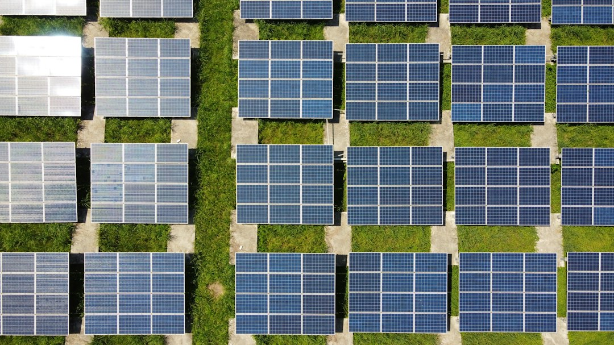

Come Free Energy PRO Rivoluziona i Sopralluoghi e i Preventivi per Installatori Fotovoltaico e Aziende di Efficientamento Energetico

Ottimizzare Sopralluoghi e Preventivi Fotovoltaici: La Soluzione Definitiva per Installatori e Aziende di Efficientamento Energetico
- Le tempistiche e complessità dei sopralluoghi rallentano drasticamente l'efficienza delle aziende fotovoltaiche ed efficientamento energetico.
- Calcolare correttamente i moduli sui tetti e generare preventivi rapidi sono sfide operative che compromettono competitività e margini.
- Free Energy PRO, con il suo PV Planner CAD Satellitare, offre una soluzione integrata, veloce e brandizzata per rivoluzionare sopralluoghi e preventivi.
Analisi Approfondita della Notizia e delle Implicazioni Operative
Nel panorama odierno dell’installazione fotovoltaica e dell’efficientamento energetico, la rapidità e precisione nella gestione dei sopralluoghi e dei preventivi sono elementi chiave per acquisire nuovi clienti e ottimizzare i processi interni. Tuttavia, le imprese operanti in questo settore spesso si scontrano con difficoltà operative non trascurabili: tempi di sopralluogo troppo lunghi, complessità nel calcolare con precisione il numero di moduli fotovoltaici installabili sulle diverse falde dei tetti e, infine, una lentezza nel generare preventivi che impatta direttamente sulla capacità di chiudere vendite in modo tempestivo. Questi fattori non solo rallentano il ciclo commerciale, ma incrementano anche i costi di gestione, con ripercussioni negative sul posizionamento competitivo sul mercato.
Questa situazione nasce da processi manuali, dalla necessità di spostamenti fisici per ogni sopralluogo e dall'assenza di strumenti digitali integrati in grado di fornire dati precisi, calcoli accurati e preventivi personalizzabili in tempi rapidi. Di conseguenza, le aziende rischiano di perdere clienti interessati, di commettere errori di dimensionamento degli impianti e di aumentare i costi del lavoro e della logistica.
Le Conseguenze e i Costi di Non Agire
Non intervenire sulle inefficienze operative significative correlate ai sopralluoghi e alla preventivazione significa accettare una serie di pesanti conseguenze:
- Perdita di competitività: I concorrenti più digitalizzati e rapidi catturano quote di mercato grazie a preventivi in tempi ridotti e soluzioni più accurate, facendo sembrare la vostra azienda lenta e meno affidabile.
- Incremento dei costi: Spostamenti ripetuti per sopralluoghi imprecisi, calcoli manuali soggetti a errori e ri-preventivazioni multiple dilatano le risorse economiche e umane, erodendo margini profittevoli.
- Soddisfazione cliente compromessa: Ritardi nella consegna dei preventivi generano frustrazione nel cliente finale e riducono la probabilità che la proposta venga accettata velocemente.
Inoltre, senza un supporto software dedicato e integrato, la fase di progettazione rimane dispersiva e soggetta ad errori umani, con un impatto diretto sul risultato finale e la qualità del servizio reso.
Come Free Energy PRO Risolve il Problema
Free Energy PRO si presenta come la soluzione tecnologica più adatta a rivoluzionare l’approccio tradizionale di installatori fotovoltaici e aziende di efficientamento energetico. Tramite il suo avanzato PV Planner CAD Satellitare, consente di digitalizzare e automatizzare le operazioni critiche di sopralluogo e preventivazione con precisione e rapidità senza precedenti.
Le sue funzionalità principali includono:
- Tracciatura digitale delle falde tetto utilizzando immagini satellitari ad alta risoluzione per mappare con precisione ogni spaziatura disponibile.
- Rotazione e posizionamento personalizzato dei moduli fotovoltaici per simulare la migliore configurazione in base alla superficie e all’esposizione, evitando sprechi o sottoutilizzo.
- Calcolo automatico della produzione energetica sfruttando i dati PVGIS, per stimare con rigore scientifico l’output potenziale e garantire proposte affidabili selezionando opzioni energetiche ottimali.
- Export immediato di preventivi PDF personalizzabili con il branding aziendale, ideale per velocizzare la comunicazione commerciale e migliorare l’immagine professionale verso i clienti.
Con Free Energy PRO, gli installatori e le aziende possono archiviare in modo strutturato tutti i progetti, integrare i dati in real time, limitare drasticamente gli errori e garantire un workflow dalle fasi iniziali di sopralluogo fino alla consegna del preventivo senza soluzione di continuità.
| Gestione Tradizionale | Con Free Energy PRO |
|---|---|
| Sopralluoghi fisici lunghi e ripetuti | Sopralluoghi digitali via satellite più rapidi e accurati |
| Calcolo manuale e approssimativo dei moduli | Calcolo automatico e preciso tramite CAD e dati PVGIS |
| Preventivi lenti, generati dopo giorni | Preventivi PDF personalizzati generati in pochi minuti |
| Elevati costi operativi e rischi di errore | Riduzione costi, errori minimi, workflow fluido e tracciabile |
💡 Ti è stato utile questo approfondimento?
Condividilo con un collega o un amico del settore Installatori Fotovoltaico e Aziende di Efficientamento Energetico a cui potrebbe interessare!
FAQ: Domande Frequenti per Professionisti del Settore
1. Free Energy PRO richiede competenze CAD avanzate per essere utilizzato?
No, Free Energy PRO è studiato per essere user-friendly: la sua interfaccia intuitiva consente anche ai professionisti senza esperienza CAD di tracciare falde e posizionare moduli facilmente.
2. È possibile personalizzare i preventivi con il branding aziendale?
Sì, il software permette di esportare preventivi in PDF completamente brandizzati, facilitando la comunicazione commerciale e migliorando l’immagine aziendale.
3. Come si ottengono i crediti per utilizzare Free Energy PRO?
All’iscrizione si ricevono automaticamente 1.000 crediti gratuiti per testare tutte le funzionalità. Successivamente, si può scegliere il pacchetto Start da €199 con 10.000 crediti per utilizzo continuativo.
Inizia Subito
1.000 crediti gratuiti all'iscrizione. Pacchetto Start da €199 per 10.000 crediti.
Fonti Ufficiali e Risorse Esterne
Scopri l'Intelligenza Artificiale per la tua attività
Ottimizza i processi e aumenta le vendite con le soluzioni B2B di RM Studio.
Scopri Free Energy PRO